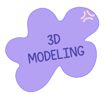
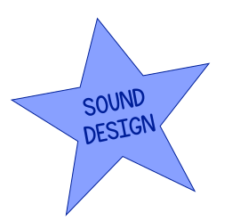
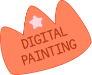
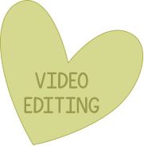
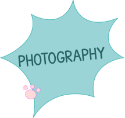
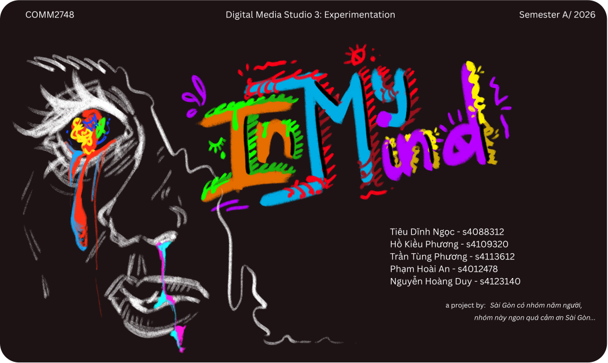
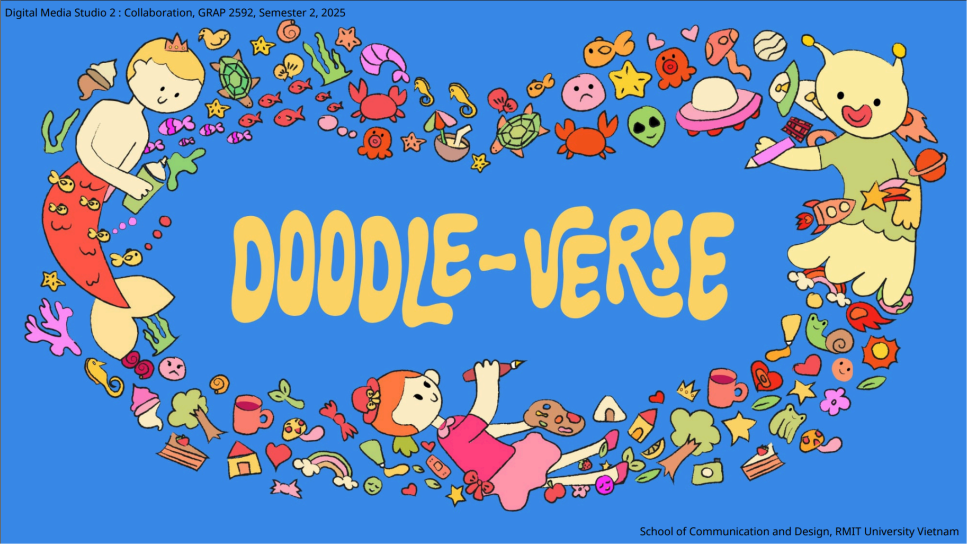
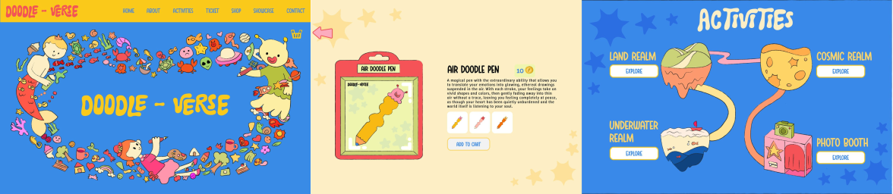
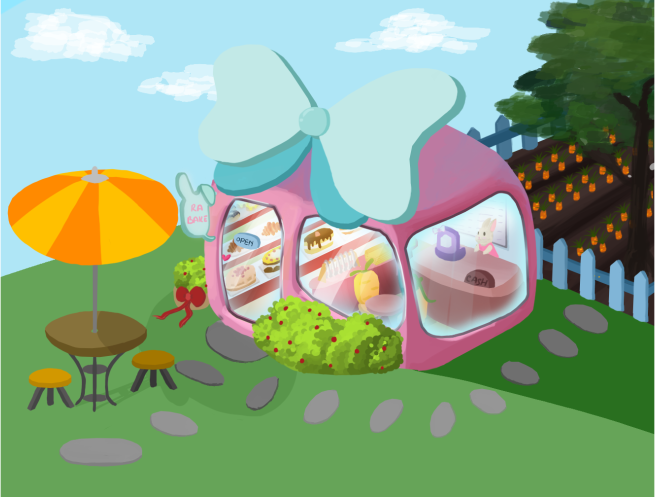

Hi, I'm Ngoc Tieu, a third-year Digital Media student at RMIT University Vietnam with an interest in video production, visual storytelling, and post-production.
Through academic projects and university events, I've explored different aspects of digital media, including filming, photography, video editing, visual design, and sound design.
I enjoy experimenting with creative approaches to storytelling and developing ideas into visual experiences. I'm continuously improving my technical skills through hands-on projects and looking forward to gaining practical experience in the film and entertainment industry. I'm currently open to internship opportunities in video production and post-production.
Software
Education
RMIT University VietnamBachelor of Design Majoring in Digital Media
Maac3D Animation
Skills





Experience
I had the chance to work on photo and video production at these basketball tournaments:
Mazery is a 2D animated short about Tiểu Mỹ, an influencer who gets trapped in a maze made of toxic online words and slowly realises that she has hurt other people with her own words too. I directed the project, which meant writing the script, creating the storyboard and planning how each scene would play out. I also handled the sound editing, matching the audio to the animation so the story and its message come through clearly.
Video Editing
Đi Một Về...?
This video was edited for my high school club as a welcoming project for new students. The video focuses on visual storytelling and pacing to create a friendly, approachable atmosphere while introducing the club’s identity and activities. Due to storage limitations, the original project file has been deleted from my device; however, the final video can still be viewed via the attached link. Full editing credits, including my name, are included in the video.
Video Editing & Sound Design
Empty of Symphony
Empty of Symphony is a short, sound driven story about memory and family. It follows a son who comes back home and reconnects with memories of his father through everyday sounds like footsteps, doors, TV static and old voice recordings. I was responsible for the video editing and sound design, arranging the sound elements and syncing them with the visuals so the timing and transitions carry the feeling of the story.
Video Essay · Class Project
Video Essay: Self-Driving Cars
This video essay was a group class project about self-driving cars: what they are, the good and bad sides of them, and how they might change the way people live and travel in the future. I was the one who made the video. I designed the visual elements in Figma, then edited everything in Adobe Premiere Pro, putting the graphics and footage together so they support the narrative and keep it easy to follow.
These are some of the content videos I created for NUC 2025 during the tournament. They were made as short Instagram reels to share moments from the event with people following online. Working on them gave me practice in capturing moments as they happen and shaping them into short clips that are easy to watch on social media. You can open each reel through the buttons above.
RBT 2026 is the RMIT 3x3 basketball tournament, and here I created and supported content for the event, including short videos and a short film. The reels above are a few of the pieces I worked on for the tournament's social media. It was a good chance to practise documenting a sports event from start to finish and turning game day moments into videos people actually want to watch.
Event Photography
RBT 2026
Alongside the video content, I also took photos at RBT 2026. This set covers the games, the players and the atmosphere around the court throughout the tournament. Shooting fast basketball action pushed me to pay close attention to timing and framing, and it became a useful way to train my eye for composition while everything is moving around me.
Event Photography
VCBC 2026
These are photos I took during VCBC 2026. I focused on documenting the tournament as it happened, from key moments in the games to the people and interactions around the event. For me, event photography is about staying close to the action and looking for frames that each tell a small part of the day.
3D Modelling · Group Project
In My Mind

In My Mind is an interactive project inspired by an interpretation of schizophrenia. It recreates distorted perception through an immersive visual environment that reacts to sound and camera input, built with MediaPipe and a MIDI controller. My role in the team was 3D modeller, so I modelled the 3D assets used in the environment and made sure they looked right for the mood of the piece while still working for what the project needed.
A project by Tiêu Dĩnh Ngọc, Hồ Kiều Phương, Trần Tùng Phương, Phạm Hoài An, Nguyễn Hoàng Duy · COMM2748 Digital Media Studio 3: Experimentation · Semester A/2026
3D Modelling & Rendering
Rabbit Bakery 3D
This is a 3D version of my Rabbit Bakery illustration, where I turned the original 2D game environment into a modelled and rendered scene. I modelled the bow topped bakery, the carrot garden, the table with its umbrella and the stepping stones, then arranged everything into the final composition. Throughout the process I tried to keep the soft colours and rounded shapes that made the original drawing feel friendly.
Illustration & Graphic Assets · Group Project
Doodle-Verse

Doodle-Verse is a concept for a healing art fair on a planet where humans, aliens and mermaids live together, built around doodling as an easy way to share feelings. The visual direction is playful and hand drawn, with bright colours and lots of small characters. I created the vector illustrations and graphic assets in Adobe Illustrator and Figma, and helped keep the visual style consistent across the final design.

Icon Design · Group Project
Chuyện Nghề Trăm Năm
Chuyện Nghề Trăm Năm is an icon set of 12 traditional Vietnamese craft villages, made to help younger people reconnect with crafts that are slowly fading away. Each icon turns a craft into a simple, recognisable visual so it can live comfortably in a modern digital space. For this project I created the vector illustrations and graphic assets in Adobe Illustrator.

Digital Illustration
Rabbit Bakery
Rabbit Bakery is a digital illustration I designed as a game environment concept, inspired by the cute and colourful style of children's games such as Soc Nhi. The scene shows a small bakery in a peaceful garden, drawn with soft pastel colours, rounded shapes and simple details so it feels friendly for young players. I focused on environment design and visual storytelling so the scene could work as a setting for casual or educational games.
Digital Image · Individual Project
Stage of Judgement
Stage of Judgement is a digital image about social prejudice and how outside opinions shape our beauty standards, especially for women. It shows a woman who is seen as having an oversized body, standing on a runway surrounded by mouths and signs of criticism. I came up with the idea, sketched the scene in Adobe Fresco and modelled and rendered the runway in Blender, then tested different poses and outfits before choosing a back view and a red dress to highlight her body.